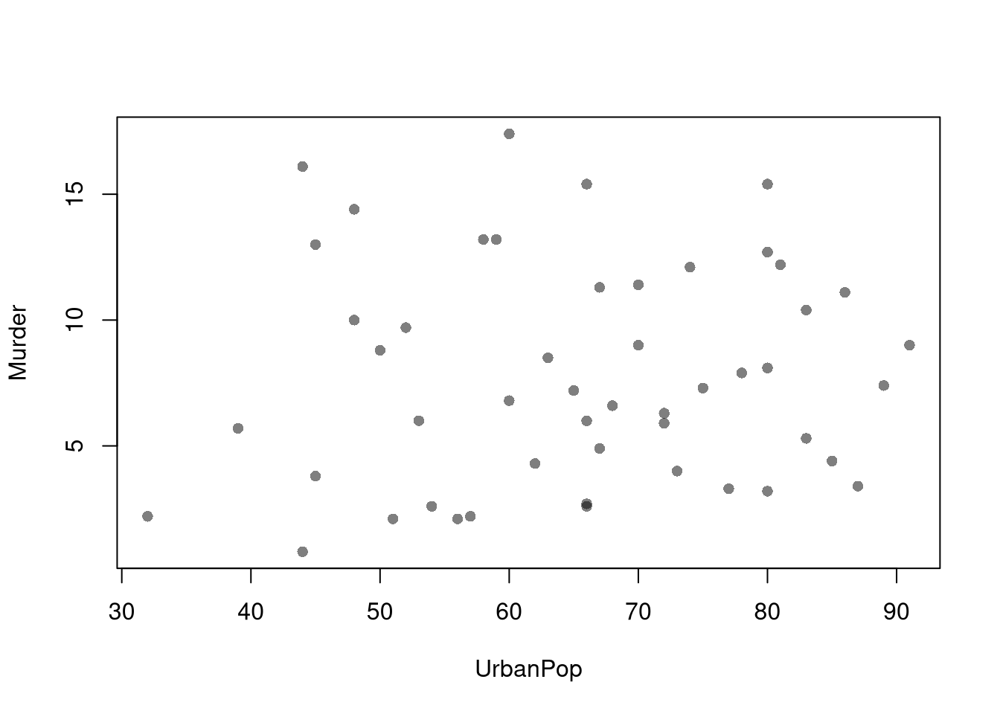
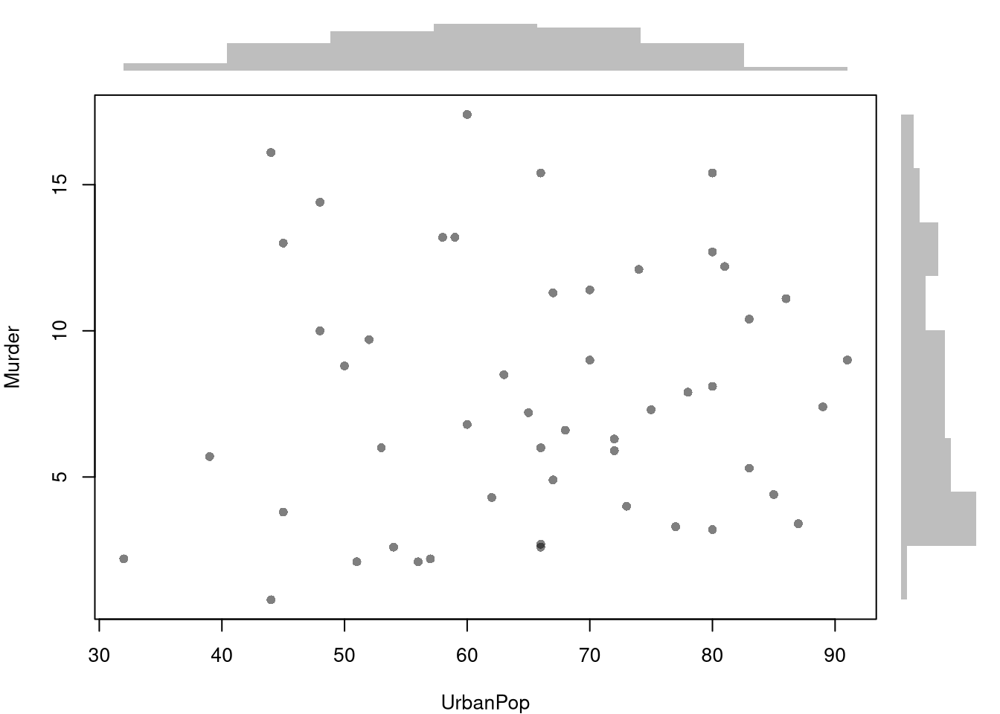
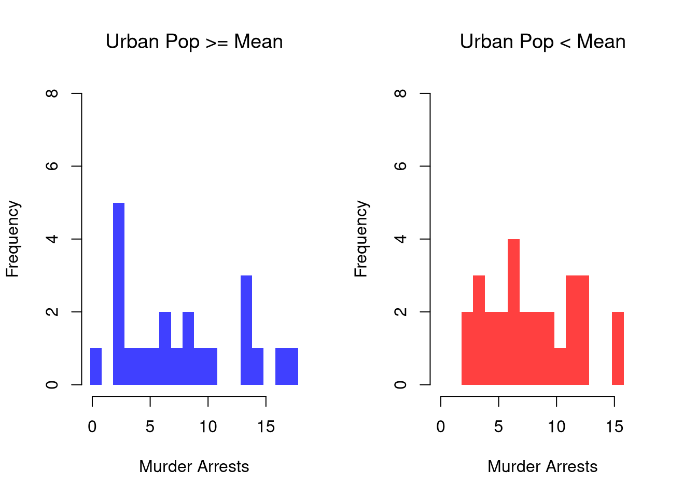
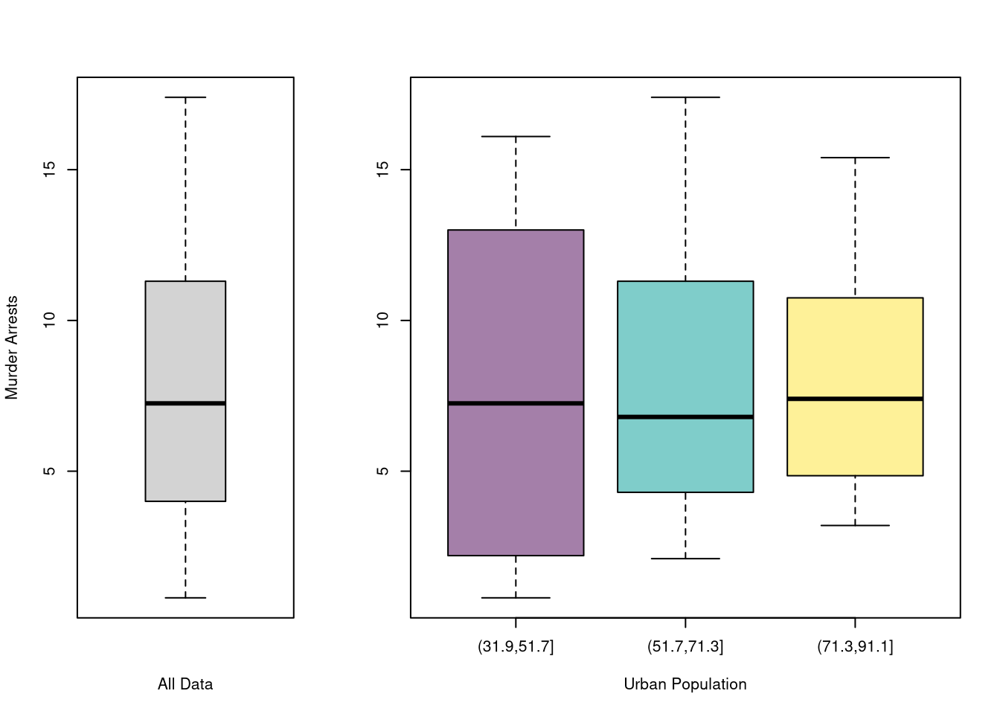
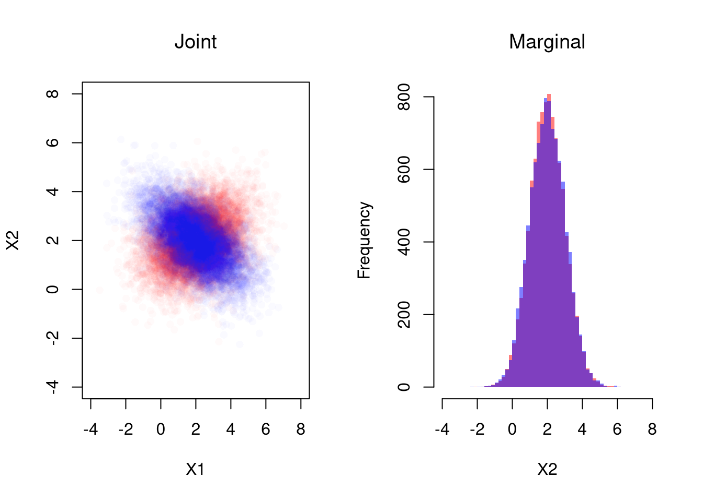

Code
# Bivariate Data from USArrests
xy <- USArrests[,c('Murder','UrbanPop')]
xy[1,]
## Murder UrbanPop
## Alabama 13.2 58We will now study two variables. The data for each observation data can be grouped together as a vector \((\hat{X}_{i}, \hat{Y}_{i})\).
# Bivariate Data from USArrests
xy <- USArrests[,c('Murder','UrbanPop')]
xy[1,]
## Murder UrbanPop
## Alabama 13.2 58The vector \((\hat{X}_{i}, \hat{Y}_{i})\) has a joint distribution that describes the relationship between \(\hat{X}_{i}\) and \(\hat{Y}_{i}\).
Scatterplots are used frequently to summarize the joint relationship between two variables, multiple observations of \((\hat{X}_{i}, \hat{Y}_{i})\). They can be enhanced in several ways. As a default, use semi-transparent points so as not to hide any points (and perhaps see if your observations are concentrated anywhere). You can also add other features that help summarize the relationship, although I will defer this until later.
plot(Murder~UrbanPop, USArrests, pch=16, col=grey(0.,.5))
You can also show the distributions of each variable along each axis.
# Setup Plot
layout( matrix(c(2,0,1,3), ncol=2, byrow=TRUE),
widths=c(9/10,1/10), heights=c(1/10,9/10))
# Scatterplot
par(mar=c(4,4,1,1))
plot(Murder~UrbanPop, USArrests, pch=16, col=rgb(0,0,0,.5))
# Add Marginals
par(mar=c(0,4,1,1))
xhist <- hist(USArrests[,'UrbanPop'], plot=FALSE)
barplot(xhist[['counts']], axes=FALSE, space=0, border=NA)
par(mar=c(4,0,1,1))
yhist <- hist(USArrests[,'Murder'], plot=FALSE)
barplot(yhist[['counts']], axes=FALSE, space=0, horiz=TRUE, border=NA)
We can show how distributions and densities change according to a second (or even third) variable using data splits. E.g.,
# Tailored Histogram
ylim <- c(0,8)
xbks <- seq(min(USArrests[,'Murder'])-1, max(USArrests[,'Murder'])+1, by=1)
# Also show more information
# Split Data by Urban Population above/below mean
pop_mean <- mean(USArrests[,'UrbanPop'])
pop_cut <- USArrests[,'UrbanPop']< pop_mean
murder_lowpop <- USArrests[pop_cut,'Murder']
murder_highpop <- USArrests[!pop_cut,'Murder']
cols <- c(low=rgb(0,0,1,.75), high=rgb(1,0,0,.75))
par(mfrow=c(1,2))
hist(murder_lowpop,
breaks=xbks, col=cols[1],
main='Urban Pop >= Mean', font.main=1,
xlab='Murder Arrests',
border=NA, ylim=ylim)
hist(murder_highpop,
breaks=xbks, col=cols[2],
main='Urban Pop < Mean', font.main=1,
xlab='Murder Arrests',
border=NA, ylim=ylim)
It is sometimes it is preferable to show the ECDF instead. And you can glue various combinations together to convey more information all at once
par(mfrow=c(1,2))
# Full Sample Density
hist(USArrests[,'Murder'],
main='Density Function Estimate', font.main=1,
xlab='Murder Arrests',
breaks=xbks, freq=F, border=NA)
# Split Sample Distribution Comparison
F_lowpop <- ecdf(murder_lowpop)
plot(F_lowpop, col=cols[1],
pch=16, xlab='Murder Arrests',
main='Distribution Function Estimates',
font.main=1, bty='n')
F_highpop <- ecdf(murder_highpop)
plot(F_highpop, add=T, col=cols[2], pch=16)
legend('bottomright', col=cols,
pch=16, bty='n', inset=c(0,.1),
title='% Urban Pop.',
legend=c('Low (<= Mean)','High (>= Mean)'))
# Simple Interactive Scatter Plot
# plot(Assault~UrbanPop, USArrests, col=grey(0,.5), pch=16,
# cex=USArrests[,'Murder']/diff(range(USArrests[,'Murder']))*2,
# main='US Murder arrests (per 100,000)')You can also split data into grouped boxplots in the same way
layout( t(c(1,2,2)))
boxplot(USArrests[,'Murder'], main='',
xlab='All Data', ylab='Murder Arrests')
# K Groups with even spacing
K <- 3
USArrests[,'UrbanPop_Kcut'] <- cut(USArrests[,'UrbanPop'],K)
Kcols <- hcl.colors(K,alpha=.5)
boxplot(Murder~UrbanPop_Kcut, USArrests,
main='', col=Kcols,
xlab='Urban Population', ylab='')
# 4 Groups with equal numbers of observations
#Qcuts <- c(
# '0%'=min(USArrests[,'UrbanPop'])-10*.Machine[['double.eps']],
# quantile(USArrests[,'UrbanPop'], probs=c(.25,.5,.75,1)))
#USArrests[,'UrbanPop']_cut <- cut(USArrests[,'UrbanPop'], Qcuts)
#boxplot(Murder~UrbanPop_cut, USArrests, col=hcl.colors(4,alpha=.5))We now consider a bivariate random vector \((X_{i}, Y_{i})\), which is a theoretical version of the bivariate observations \((\hat{X}_{i}, \hat{Y}_{i})\). E.g., If we are going to flip two coins, then \((X_{i}, Y_{i})\) corresponds to the unflipped coins and \((\hat{X}_{i}, \hat{Y}_{i})\) corresponds to concrete values after they are flipped.
The joint distribution is defined as \[\begin{eqnarray} Prob(X_{i} = x, Y_{i} = y) \end{eqnarray}\] Variables are statistically independent if \(Prob(X_{i} = x, Y_{i} = y)= Prob(X_{i} = x) Prob(Y_{i} = y)\) for all \(x, y\). Independence is sometimes assumed for mathematical simplicity, not because it generally fits data well.1
The conditional distributions are defined as \[\begin{eqnarray} Prob(X_{i} = x | Y_{i} = y) = \frac{ Prob(X_{i} = x, Y_{i} = y)}{ Prob( Y_{i} = y )}\\ Prob(Y_{i} = y | X_{i} = x) = \frac{ Prob(X_{i} = x, Y_{i} = y)}{ Prob( X_{i} = x )} \end{eqnarray}\] The marginal distributions are then defined as \[\begin{eqnarray} Prob(X_{i} = x) = \sum_{y} Prob(X_{i} = x | Y_{i} = y) Prob( Y_{i} = y ) \\ Prob(Y_{i} = y) = \sum_{x} Prob(Y_{i} = y | X_{i} = x) Prob( X_{i} = x ), \end{eqnarray}\] which is also known as the law of total probability.
For one example, Consider flipping two coins, where we mark whether “heads” is face up with a \(1\) and “tail” with a \(0\). E.g., the first coin has a value of \(x=1\) if it shows heads and \(x=0\) if it shows tails. This table shows both the joint distribution and also each marginal distribution.
| \(x=0\) | \(x=1\) | Marginal | |
|---|---|---|---|
| \(y=0\) | \(Prob(X_{i}=0,Y_{i}=0)\) | \(Prob(X_{i}=1,Y_{i}=0)\) | \(Prob(Y_{i}=0)\) |
| \(y=1\) | \(Prob(X_{i}=0,Y_{i}=1)\) | \(Prob(X_{i}=1,Y_{i}=1)\) | \(Prob(Y_{i}=1)\) |
| Marginal | \(Prob(X_{i}=0)\) | \(Prob(X_{i}=1)\) | \(1\) |
Note that different joint distributions can have the same marginal distributions.
The joint distribution is defined as \[\begin{eqnarray} F(x, y) &=& Prob(X_{i} \leq x, Y_{i} \leq y) \end{eqnarray}\] The marginal distributions are then defined as \[\begin{eqnarray} F_{X}(x) &=& F(x, \infty)\\ F_{Y}(y) &=& F(\infty, y). \end{eqnarray}\] which is also known as the law of total probability. Variables are statistically independent if \(F(x, y) = F_{X}(x)F_{Y}(y)\) for all \(x, y\).
For example, suppose \((X_{i},Y_{i})\) is bivariate normal with means \((\mu_{X}, \mu_{Y})\), variances \((\sigma_{X}, \sigma_{Y})\) and covariance \(\rho\).
# Simulate Bivariate Data
N <- 10000
Mu <- c(2,2) ## Means
Sigma1 <- matrix(c(2,-.8,-.8,1),2,2) ## CoVariance Matrix
MVdat1 <- mvtnorm::rmvnorm(N, Mu, Sigma1)
colnames(MVdat1) <- c('X','Y')
Sigma2 <- matrix(c(2,.4,.4,1),2,2) ## CoVariance Matrix
MVdat2 <- mvtnorm::rmvnorm(N, Mu, Sigma2)
colnames(MVdat2) <- c('X','Y')
par(mfrow=c(1,2))
## Different diagonals
plot(MVdat2, col=rgb(1,0,0,0.02), pch=16,
main='Joint Distributions', font.main=1,
ylim=c(-4,8), xlim=c(-4,8),
xlab='X', ylab='Y')
points(MVdat1,col=rgb(0,0,1,0.02),pch=16)
## Same marginal distributions
xbks <- seq(-4,8,by=.2)
hist(MVdat2[,2], col=rgb(1,0,0,0.5),
breaks=xbks, border=NA,
xlab='Y',
main='Marginal Distributions', font.main=1)
hist(MVdat1[,2], col=rgb(0,0,1,0.5),
add=T, breaks=xbks, border=NA)
# See that independent data are a special case
n <- 2e4
## 2 Indepenant RV
XYiid <- cbind( rnorm(n), rnorm(n))
## As a single Joint Draw
XYjoint <- mvtnorm::rmvnorm(n, c(0,0))
## Plot
par(mfrow=c(1,2))
plot(XYiid, xlab=
col=grey(0,.05), pch=16, xlim=c(-5,5), ylim=c(-5,5))
plot(XYjoint,
col=grey(0,.05), pch=16, xlim=c(-5,5), ylim=c(-5,5))
# Compare densities
#d1 <- dnorm(XYiid[,1],0)*dnorm(XYiid[,2],0)
#d2 <- mvtnorm::dmvnorm(XYiid, c(0,0))
#head(cbind(d1,d2))The multivariate normal is a workhorse for analytical work on multivariate random variables, but there are many more. See e.g., https://cran.r-project.org/web/packages/NonNorMvtDist/NonNorMvtDist.pdf
Note Simpson’s Paradox:
Also note Bayes’ Theorem: \[\begin{eqnarray} Prob(X_{i} = x | Y_{i} = y) Prob( Y_{i} = y) &=& Prob(X_{i} = x, Y_{i} = y) = Prob(Y_{i} = y | X_{i} = x) Prob(X_{i} = x).\\ Prob(X_{i} = x | Y_{i} = y) &=& \frac{ Prob(Y_{i} = y | X_{i} = x) Prob(X_{i}=x) }{ Prob( Y_{i} = y) }. \end{eqnarray}\]
# Verify Bayes' theorem for the unfair coin case:
# Compute Prob(X1=1 | X2=1) using the formula:
# Prob(X1=1 | X2=1) = [Prob(X2=1 | X1=1) * Prob(X1=1)] / Prob(X2=1)
P_X1_1 <- 0.5
P_X2_1_given_X1_1 <- 1 # Since coin 2 copies coin 1.
P_X2_1 <- P_X2_unfair["X2=1"]
bayes_result <- (P_X2_1_given_X1_1 * P_X1_1) / P_X2_1
bayes_result
## X2=1
## 1For plotting histograms and marginal distributions, see
Many introductory econometrics textbooks have a good appendix on probability and statistics. There are many useful statistical texts online too
See the Further reading about Probability Theory in the Statistics chapter.
The same can be said about assuming normally distributed errors, although at least that can be motivated by the Central Limit Theorems.↩︎